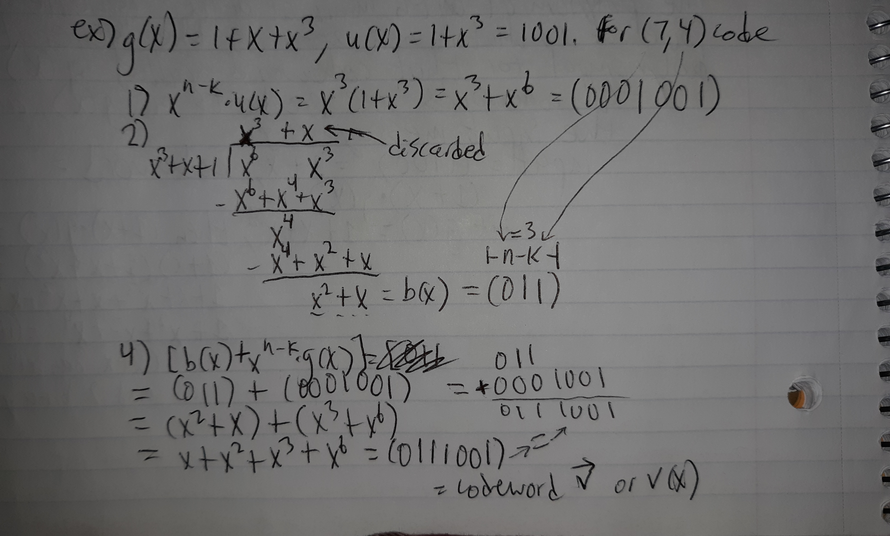
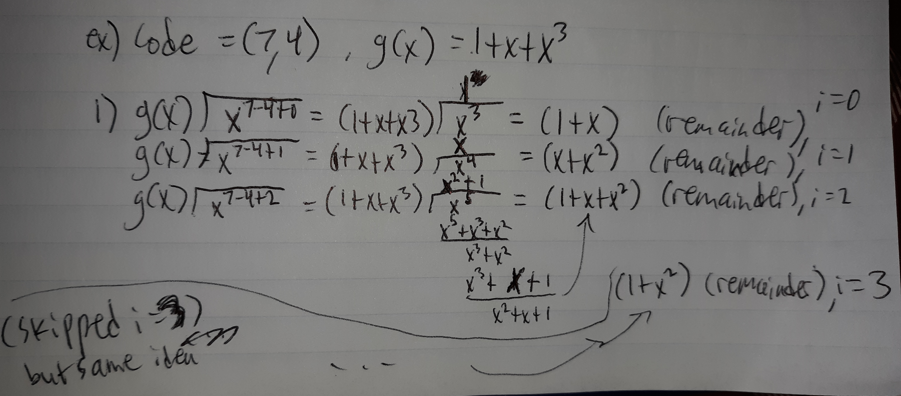
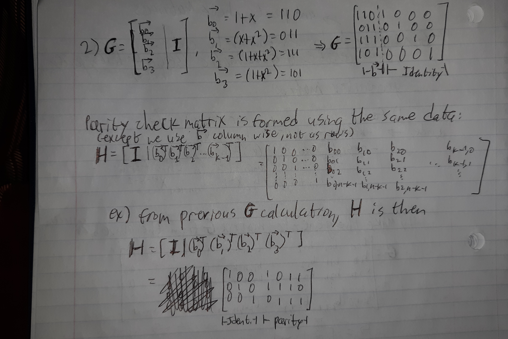
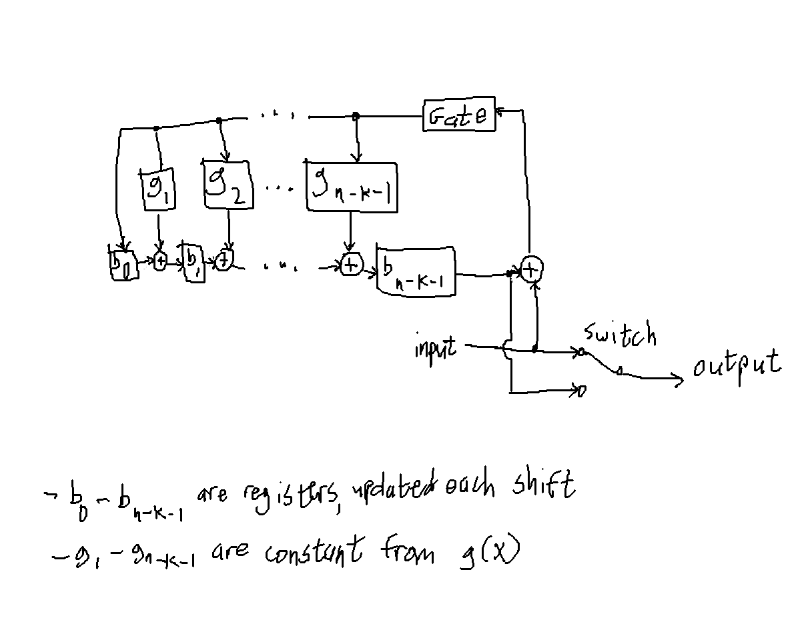
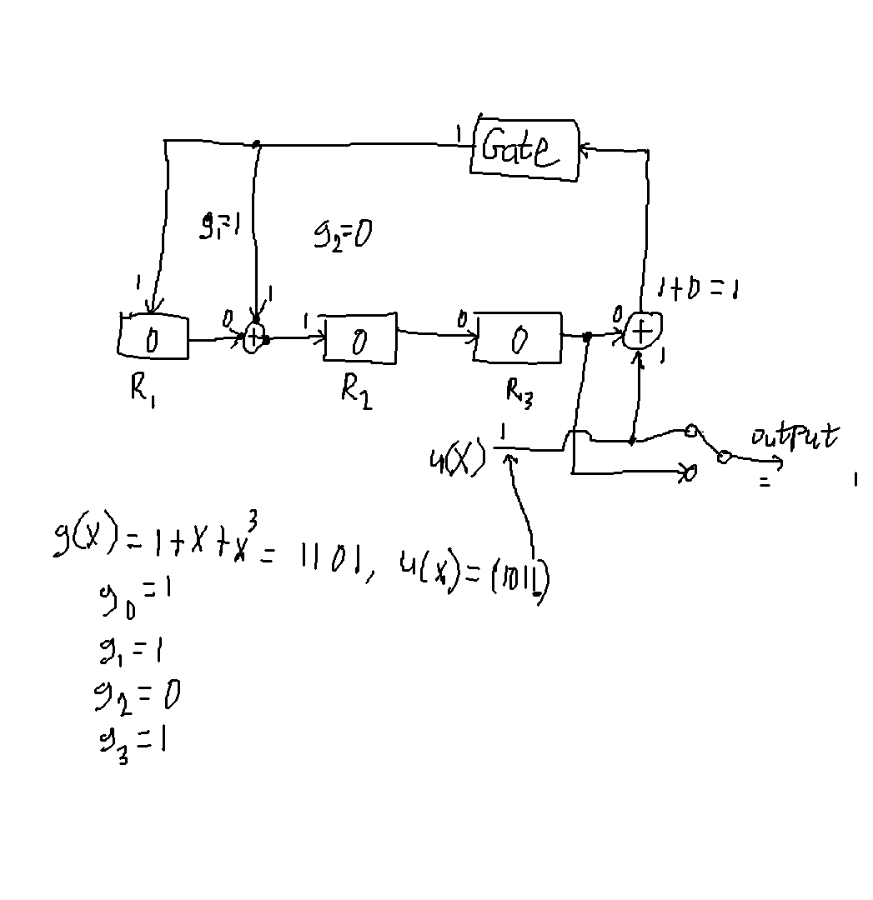
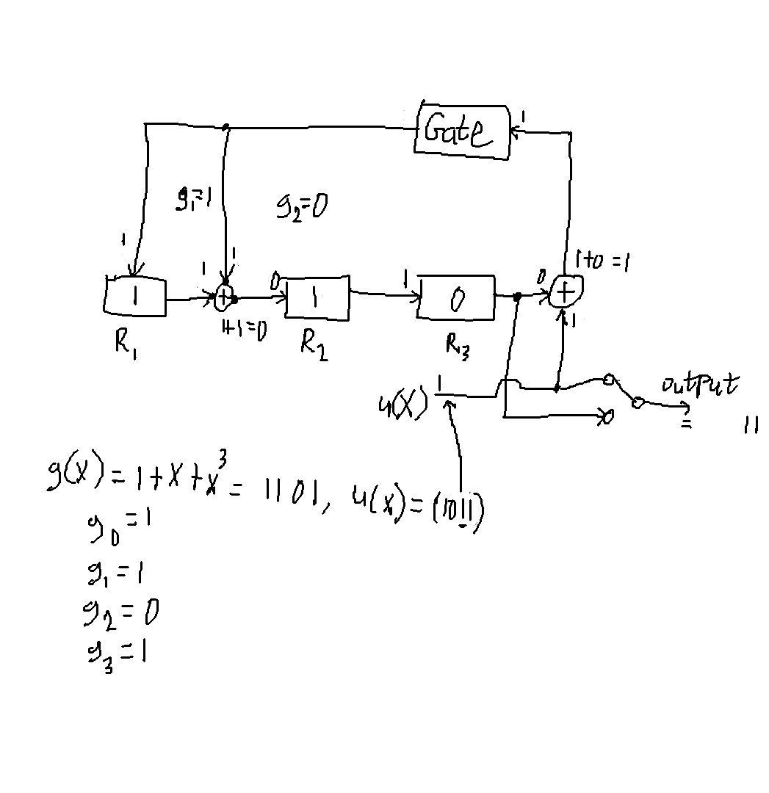
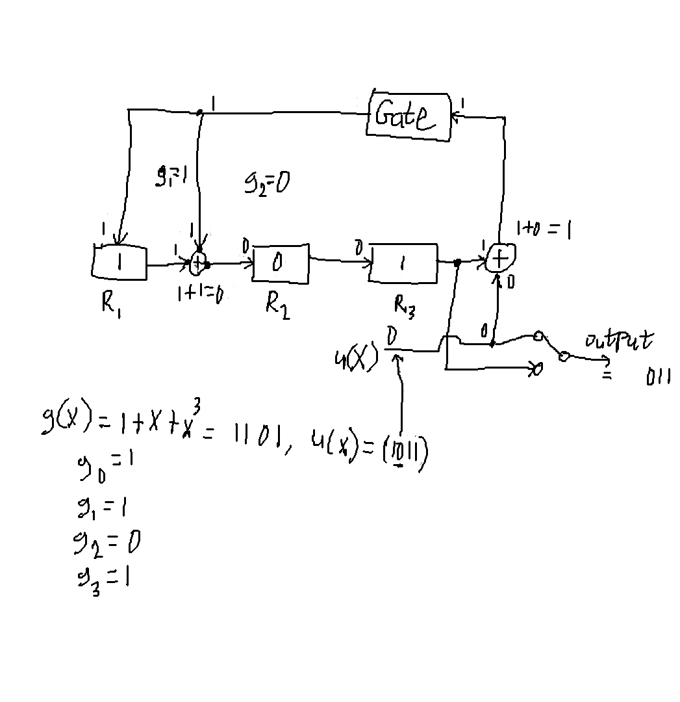
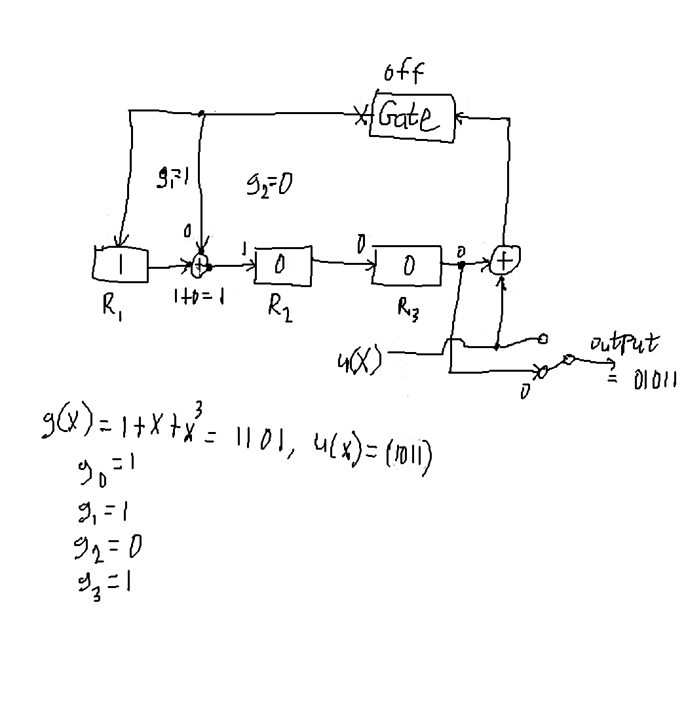
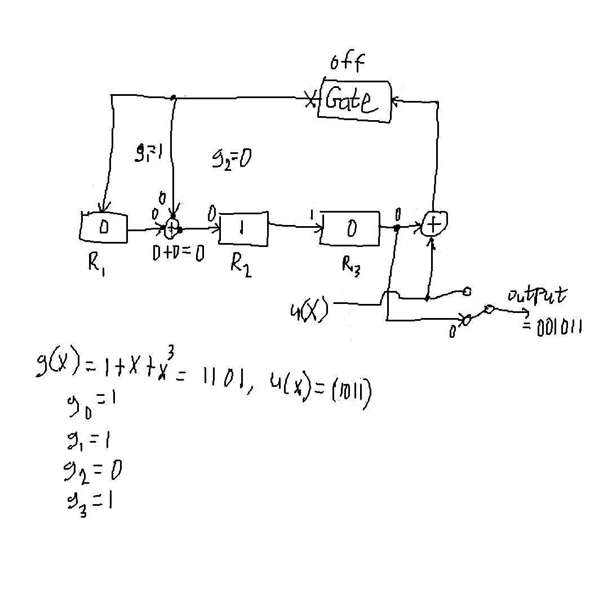
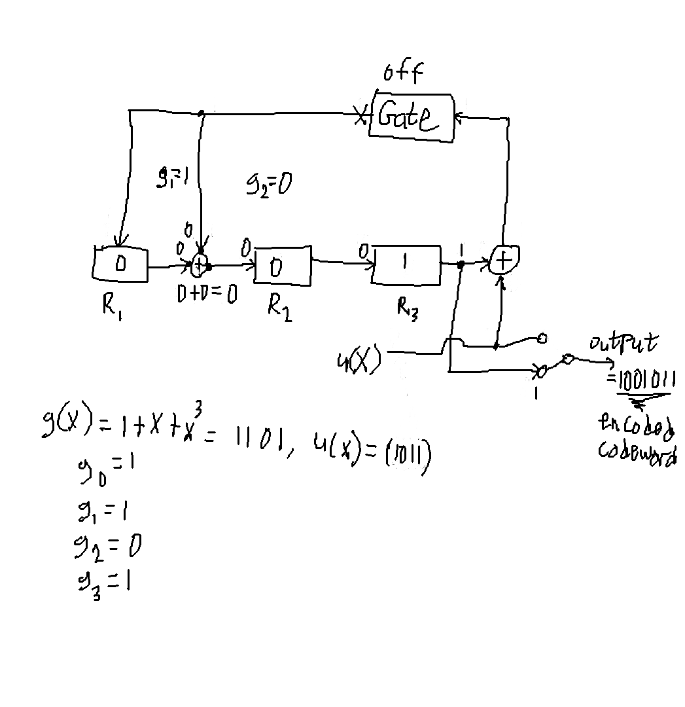

Cyclic Code: A linear block code where shifting the bits of a codeword
by any amount (left or right, with carry/wraparound) results in another
valid codeword
Generator Polynomial: The polynomial of minimal degree (smallest power)
from a cyclic code that is non-zero which "generates" every other
codeword in the code by multiplying itself with the input bits
Polynomials
Codewords in cyclic codes are represented as polynomials
1101000 = 1 + 1X + 0X2+ 1X3 =
1 + X + X3
0110100 = 0 + 1X + 1X2+ 0X3 + 1X4 =
X + X2 + X4
Polynomials in turn can also be represented as the
quotient and remainder by dividing the polynomial with another
v(X) = q(X)j(X) + b(X)
q(X) and b(X) are the quotient and remainder of dividing v(X) by j(X)
Generator Polynomial
The basis polynomial for the rest of the codewords in the
cyclic code
denoted g(X)
Codeword = input*g(X)
Input = (1100) = 1 + X
g(X) = (1101) = 1 + X + X3
codeword = Input*g(X) = (1+X)(1+X+X3) =
1 + X + X3 + X + X2 + X4 =
1 + X2 + X3 + X4 =
(1011100) for a (7,4) code
X + X = 0 since modulo 2 addition for binary GF(2)
Systematic Codewords
The above method of encoding the input doesn't gurantee
the result is systematic (ordered by parity bits then info bits)
To generate systematic codewords, you encode via the following:
Multiply input u(X) by Xn-k
Divide result by g(X), remainder = b(X)
Output codeword = u(X)Xn-k + b(X)

Example systematic encoding for a (7,4)
cyclic codeword
Generator and parity check matrices
Systematic Generator and Parity Check matrices are made via:
for i=0, 1, ... k-1
divide Xn-k-i by g(X) and save remainder as bi
bi = bi,0 + bi,1X + ... bi,n-k-1Xn-k-1
Form the generator matrix G in the following format:
Each row is [bi | ui], where ui is a zero vector except for a 1 in the ith position
Form the parity matrix H in the following format
The first (n-k) columns are the identity matrix
The remaining k columns are the remainders
calculated in step 1


Generator and Parity matrix generation example
Encoder Circuit
A circuit for encoding can be made by extracting values from either g(X) or values from the parity check matrix
An encoding circuit using the generator polynomial looks like:

For each g1...gn-k-1 its corresponding adder (+) is only placed
in the circuit if gi is 1
(otherwise you're just adding 0 at each point)
For example, encoding the (7,4) code with g(X) = 1 + X + X3, and input u(X) = (1011)
The circuit starts with the output switch up and the gate on. The registers start at 0
and the first input bit (farthest right) = 1 is entered

The registers are updated then the next input bit (second from farthest right)
is entered

Update registers then input next bit

Update registers then enter next bit
Now that all input bits have entered, the gate is turned off and the switch is flipped
in order to gather the parity bits b0 through b2, and the registers
start to output their contents

The next register bit goes through and outputs

The last register is output and the final resulting codeword is (1001011)

A similar circuit and process can be made using the parity matrix values (shown in book as well)